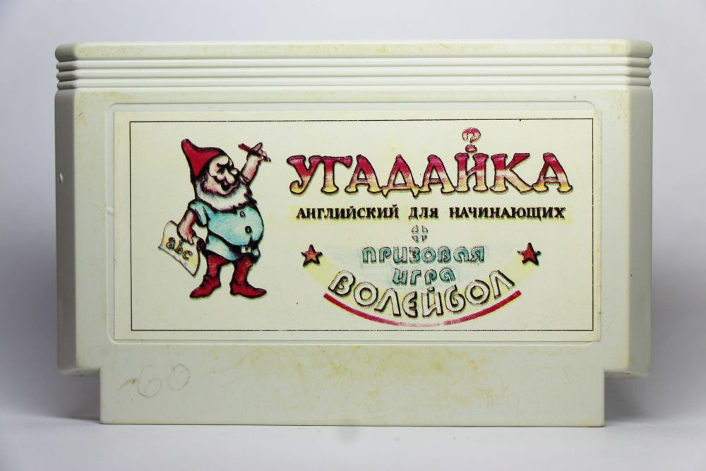
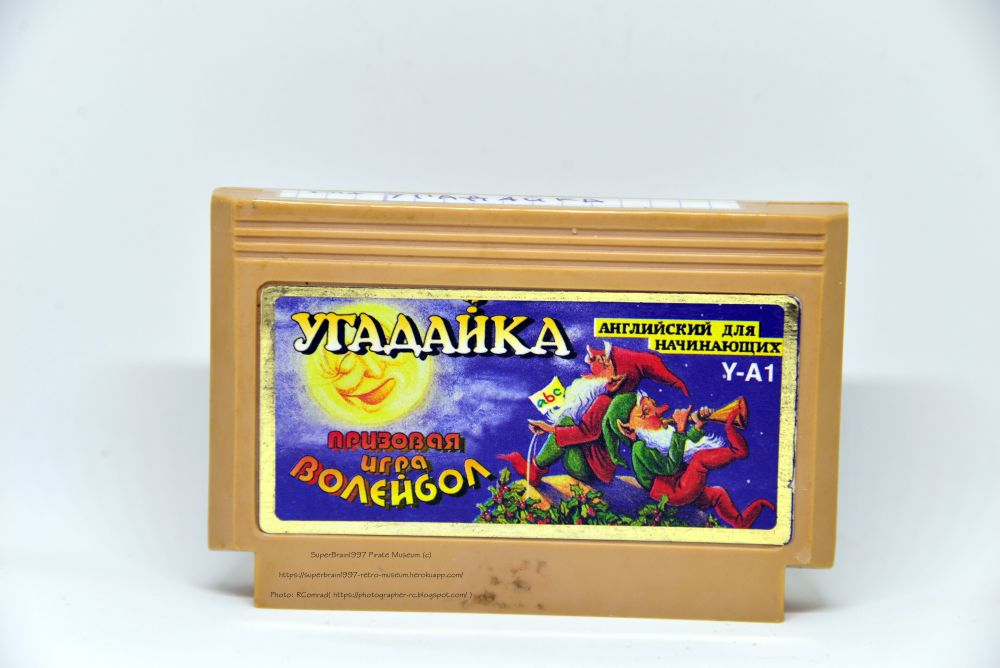
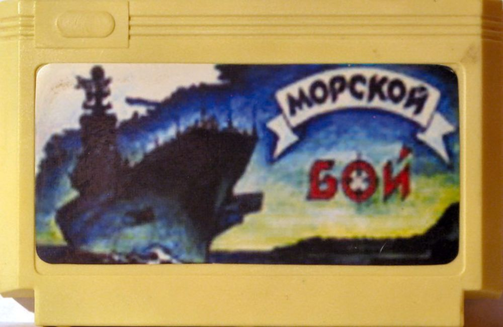
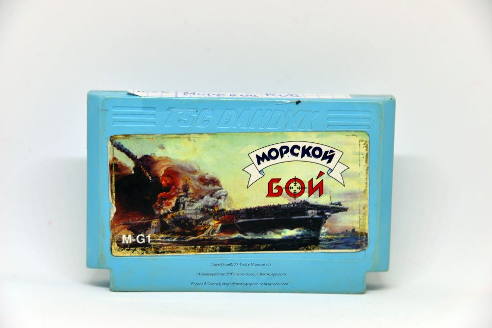
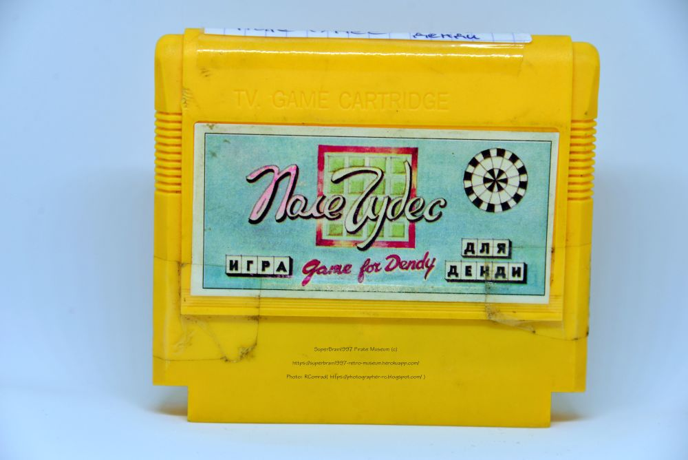
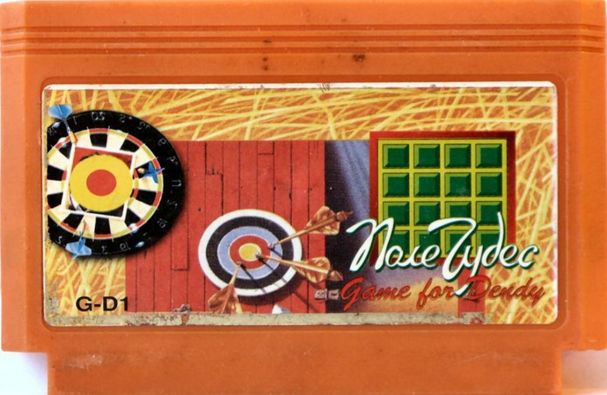
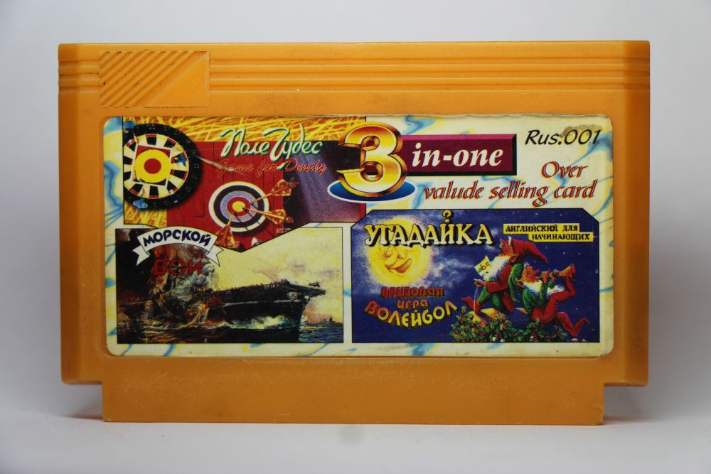

Картриджи А.Чудова и их сторонние копии
Дата написания статьи: 10 февраля 2018.Ссылка на пост ВК (оригинал): https://vk.com/wall-87396586_2182
Адаптировано для музея: AlexSRMD
Здравствуйте друзья, поскольку я теперь второй админ этого паблика я решил внести и свою лепту уже напрямую и написать об одном интересном факте, который я обнаружил на некоторых картриджах серии А-В1. Речь сегодня пойдет про наши - отечественные игры от Александра Чудова и их китайские копии.
Я полагаю что китайским пиратам каким-то мифическим образом в руки попадали игры от Чудова, причем именно в том исполнении в котором они были у него в оригинале, а при копировании и оформлении на своих они использовали совершенно ту же тематику что была на "первоисточниках". Вопрос о том каким образом они попали из Ульяновска к пиратам, производившим картриджи А-В1 серии вопрос вероятно очень непростой, но не об этом сейчас речь.
Вот смотрите, на конкретных примерах я вам покажу подтверждение:
1.(Фото 1) Картридж отечественная "первая копия" с игрой "Угадайка" - что на нем изображено? Гном и название. Окей, запоминаем, причем запомните и какими шрифтами написан текст, это тоже пригодится
(Фото 2) Картридж от А-В1 и что мы с вами на нем видим? Мы видим опять таки гномов и название перенесено практически без изменения, и больше того шрифты те же самые, но при этом разбросаны по обложке иначе.
То есть пираты почти не отошли от канона, а просто взяли аналогичные компоненты первой копии и добавив ID-номер типа А-В1 выпустили на прилавки. Дальше больше:
2.(Фото 3) Картридж отечественная игра, вновь "первая копия" игры Морской Бой. Что изображено на картинке, некий боевой корабль в воде. Запоминаем картинку и снова запоминаем как написано название.
(Фото 4) Картридж А-В1 серии с той же самой игрой на борту, изображается опять же корабль, но на этот раз пираты позволили себе импровизировать и поставили подбитый авианосец, но название написано точно также как на прошлой копии и картинка отображает по сути тоже самое что было на "первой копии".
Но и это еще не все, самое интересное оказалось со следующей игрой - Поле Чудес. Эту игру несомненно можно назвать чуть ли не самой известной отечественной самоделкой на Денди, но опять же рассмотрим два ее варианта:
3.(Фото 5) Если мы с вами посмотрим на оригинальную картинку, то мы с вами увидим что на ней изображен барабан и название. (Фото 6) А на А-В1 копии мы видим нечто иное, мы видим мишени для лукового тира и тарелку для игры в дартс, и я разгадал тайну почему так случилось.
Дело в том, что пираты вообще вряд ли знали что такое "Поле Чудес" в оригинале, и что игра сделана на основе отечественного телешоу, поэтому как только к ним попала оригинальная копия с они подумали что это не барабан, а мишень для тира или дартса и поэтому на обложке А-В1 серии именно это и изображалось.
То есть пираты так боялись отойти от изначальной концепции картинок на оригинальных "первых" копиях, что просто брали оригинальную идею картинки и воспроизводили ее в своем исполнении. Со шрифтом они поступили точно также, если мы посмотрим на оригинальную копию и на А-В1 то мы увидим что шрифты на них практически идентичны друг другу.
Пираты никогда так не поступали с любыми другими играми, которые они копировали, но при этом с отечественными самоделками от Чудова произошло именно так. И предположительно дело в следующем: Получается у тех кто делал А-В1 картриджи либо работали русскоязычные сотрудники которые и принесли к ним первые копии игр от Чудова, либо же китайцы сами каким то образом доставали игры от Чудова и боясь облажаться просто брали и сами копировали все почти подчистую в том числе и картинки.
Обе версии имеют определенные противоречия и недостатки:
1) Если у них действительно работали русскоязычные сотрудники, то почему они не объясняли китайским коллегам что обозначает название и в чем заключается смысл игр, ведь по картинкам мы можем понять что копировавшие это люди явно не понимали о чем в них идет речь, и что просто машинально скопированные картинки говорят о том что они очень боялись изобразить на них не то, что должно быть, чего кстати не было заметно на большинстве картридже серии А-В1, зато вот с Поле Чудес они все-таки прокололись 2) Если игры все таки доставали китайцы сами, то как это вообще возможно, если допустим от того же Ульяновска до Китая достаточно далеко? А даже если и так, то вероятно это было просто банальное везение, потому как это единственные три игры, которые я видел на А-В1 картридах и все три - 1995 года выпуска.
(Фото 7)Вероятно то что до них другие не дошли подтверждает то, что позже некто выпустил многоигровку с серийным номером Rus.001 именно с этими тремя играми. И вероятно сам создатель этих игр - Александр Чудов, видел ее потому как в интервью, которое у него брал какой-то сайт он произносит такую фразу:
"Самая запоминающеяся из того времени - это пиратское копирование моих игр. Вначале их стали копировать в Санкт-Петербурге, затем пиратством занялись в Китае, причём китайцы запихивали по 4, а то и больше игр в один картридж".
А поскольку других сборников на русском языке от китайских пиратов я не видел, а эта единственная известная, то я так полагаю что Александр говорил именно о ней - Rus.001 Кстати этот же картридж рассматривался мной и SRMD в одном из выпусков передачи "Gameplay and Commentary" То есть некий китайский иностранец приехал в РФ, случайно увидел пиратские поделки от Чудова, решил их купить и привести к себе на родину для дальнейшего распространения? Сложно сказать, это лишь догадки.
Последнее что хочу написать так это то, что если эти игры были на А-В1 серии, то получается они предназначались не только на наш рынок и вероятно в Китае тоже могли иметь какое-то распространение, а может быть даже эти игры могли попасть и куда-то еще за рубеж? Это лишь предположение, но ведь такое вполне могло быть как мне кажется, причем в условиях 90-ых это было бы даже интересно.
Спасибо за внимание, надеюсь вам понравилось.
Ваш SuperBrain1997 или Александр Нейрбов.
Галерея






